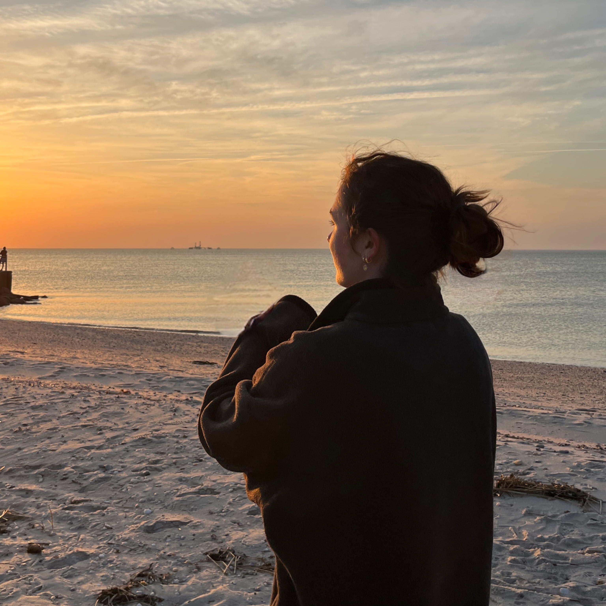

I am a health science major at Northeastern University graduating in December 2026. Health science has allowed me to explore a variety of possible career paths, including physical therapy, education, and healthcare data analytics, and discover what I'm most passionate about — clinical research.
Clinical research has a history of both incredible successes and incredibly unethical misuses. Clinical trials drive health advancements, but a trial is only as trustworthy as the way it treats its participants and how it collects and communicates data. I want to contribute to the field of clinical research while upholding the ethical responsibilities to patients and the public, and earning the trust of the communities it impacts. My goal after graduation is a role on a clinical research team —whether that's primarily in patient recruitment, regulatory affairs, site management, or data analytics — where I can make a positive difference.
Outside of school and work, my biggest hobbies are playing volleyball, reading, rock climbing, and hiking. On my volleyball page you can find a D3 visualization of how volleyball attendance has changed over the last decade, along with more about what I look for in matches and why I love the sport.

I am always happy to talk about clinical research, data visualization, hobbies, or just life!